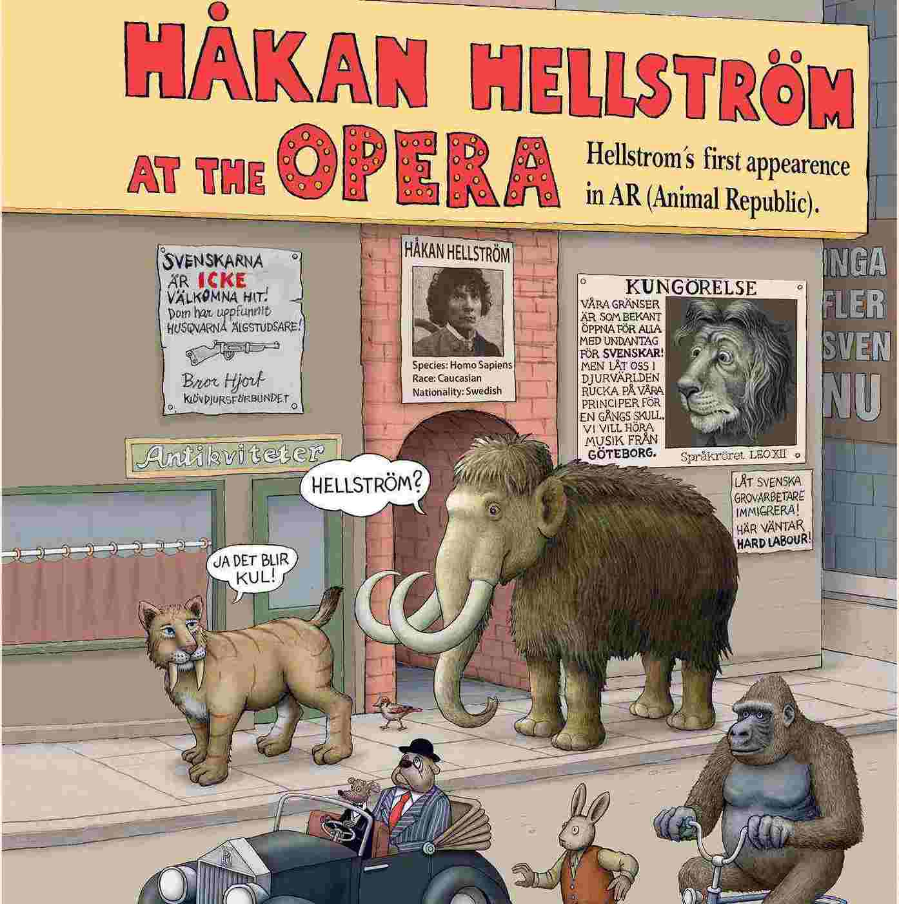

Du gamla du fria
Släppt den 26 Augusti 2016
Musiker:
- Håkan Hellström, Sång & Producent
- Björn Olsson, Producent
- Charlie Storm, Producent
Du gamla du fria är det åttonde studioalbumet av Håkan Hellström. Albumet föregicks av EP-skivan 1974 i april samma år, och låten "Din tid kommer" släpptes först som singel från EP:n. "Runaway (fri som en byrd)" är en alternativ version av "Hon är en Runaway" från samma EP.

Sida Ett
- I sprickorna kommer ljuset in
- Runaway
- Öppen genom hela natten
- Jag utan dig
- Pärlor
- Du gamla
Sida Två
- Din tid kommer
- Elefanten & Sparven
- Hoppas det ska gå bra för de yngre också
- Ingen oro, tjabo!
- Du fria
- Albumet är inspelat, skrivet och producerat i sammarbete med Björn Olsson.
- Gällande musiken på Du gamla du fria kommenterade Olsson i mars 2016 att "Det låter mindre indie och mer ABBA om de nya låtarna", medan musiktidningar som Gaffa beskrivit albumet som mer experimentellt.
- Håkan Hellström, producent
- “En helomvändning för Håkan. Lekfullhet och vemod får samsas på nya albumet.” –Expressen.